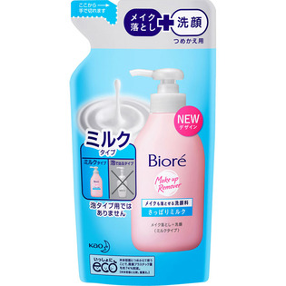

返回列表
产品名称：ビオレ メイクも落とせる洗顔料 つめかえ用

花王 ビオレ メイクも落とせる洗顔料 つめかえ用 １８０ＭＬ
メーカー 花王
JANコード 4901301254184
商品の特徴
メイク落とし＋洗顔
ミルクタイプ
さっぱりミルク
- 成分・分量
- 水、ミリスチン酸、グリセリン、デシルグルコシド、PPG-7ブテス-4、ラウリン酸、水酸化K、ジステアリン酸グリコール、ラウラミドプロピルベタイン、ヒアルロン酸Na、ポリクオタニウム-7、エタノール、エチドロン酸、BHT、香料
- 用法及び用量
- ・適量（ポンプ1押し程度）を水やお湯で泡立てて洗い、あとはよく流します。落ちにくいメイクの時は、量を多めにして洗ってください。